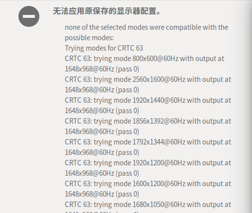

学计算机的,大学期间不调戏调戏Linux等于白读了四年!
我自己对Linux挺有兴趣,就总想弄来玩一玩 开始是在虚拟机上用,但是虚拟机总是有那么点膈应人 感觉就像带个手套去牵妹子得手 干脆在原来Win10的基础上装成双系统 来回倒腾了好几个系统,统统给我在安装前卡住
百度来百度去,系统倒是装了上去,但是又出现了各种各样的问题 难受的一匹
找问题原因
凡事先谷歌/百度
在网上逛了一圈,说啥的都有 我再看了看我这电脑配置
- CPU: i5-64003
- 显卡: 950m
- 系统: 装机的Win10家庭版
- 打算往上装的系统: Ubuntu 16.04
结合网上查的,应该是显卡驱动问题没跑了 有说 核显+独显 电源管理问题 也有说 Ubuntu 的第三方显卡驱动nouveau的问题 先不管它啥问题,我就先不给这显卡上驱动行不行?
解决问题
先安装上系统
- U盘安装卡在logo处时,强制关机就行,然后再次安装
- 再进入U盘安装时,没进安装界面狂按键盘就行,然后会要选语言,选个看得懂的就行
- 在F6把nomodeset勾上,然后进入安装
- 后面按照正常步骤安装就行
安装显卡驱动
因为在前面没装上显卡驱动,所以电脑用起来会很操蛋
- 先去Nvidia官网下载驱动NVIDIA驱动下载
- 为了方便后面安装,把原本很长的名字改短,比如我改成了nvidia.run
- 用
cd命令进入下载好的驱动文件所在的目录 - 然后给这个驱动改改权限
|
|
- 把第三方驱动nouveau拉黑(视情况,可做可不做)
|
|
在文件末尾添加blacklist nouveau
然后刷新配置
|
|
完事了最好重启下系统
- 停用图形服务
|
|
- 先用
cd命令进入下载好的驱动的目录下,安装驱动
|
|
-no-opengl-files是表示不安装openGL相关组件,因为这东西有可能导致开机登录又跳回登录界面,最好不装上去
- 然后重新启动图形界面
|
|
- 最后重启系统,驱动问题就搞定了
其他问题
我在学校为了方便,用的是笔记本带一个拓展显示器
在安装完驱动并使用过一段时间后,会出现类似图片上的无法应用原保存的显示器设置

笔记本屏幕分辨率也只有640x480这一个选项 网上搜索之后发现,是双屏有几率会出现这样的问题 但是到最后我也没搞清楚是什么原因导致的 以下是我尝试过的解决方法:
删除monitors.xml 文件
|
|
尝试使用这个方法之后开机时间明显变长了 估计是生成新的显示配置文件 但是最终还是没有解决我的问题
手动添加屏幕分辨率选项
查看各屏幕分辨率模式
在Terminal(终端)输入xrandr查看屏幕分辨率列表
之后会出现类似如下的信息
|
|
其中 eDP1/DP1/DP2 是各个显示接口的情况,*代表该接口正在使用的分辨率
我的就是连接了eDP1和DP2两个接口
用cvt新建一个显示模式
|
|
之后屏幕会出现两行信息
用xrandr将新建的模式添加到指定显示接口
将屏幕上Modeline后的所有内容原封不动地如下接到xrandr --newmode后面
|
|
然后再用xrandr --addmode把新建的显示分辨率添加到显示器上
我是添加到了eDP1这个显示器上
|
|
添加之后进入系统设置
添加成功后之前只有一个分辨率的eDP1又有了刚刚添加的分辨率的选项
重新安装驱动
卸载Nvidia驱动
先用cd命令进入下载好的驱动的目录下,卸载驱动
|
|
使用nouveau驱动或者重装Nvidia驱动
卸载掉Nvidia驱动之后,系统会自动选用第三方开源的nouveau驱动 如果不想用这个驱动 按照前面2.2.安装显卡驱动再次安装下载好的驱动